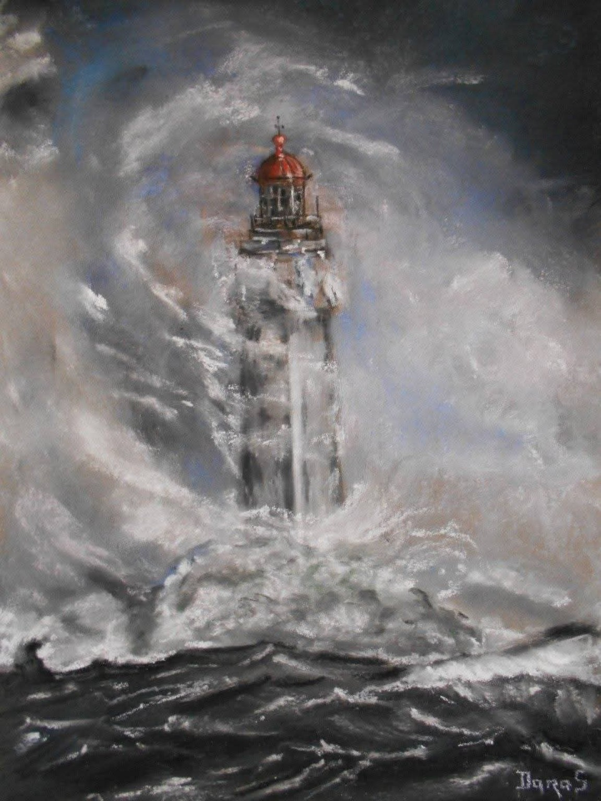

Marine
Le phare
Pris dans les vagues, le phare oppose sa présence stoïque et silencieuse à la violence de la mer. Je n'ai pas cherché à représenter la tempête elle-même, mais ce point fixe qui demeure lorsque tout semble en mouvement. Le pastel sec m'a permis de modeler les embruns et de laisser la lumière émerger comme un repère au cœur des éléments.
Demander des informations →← Retour à la galerie